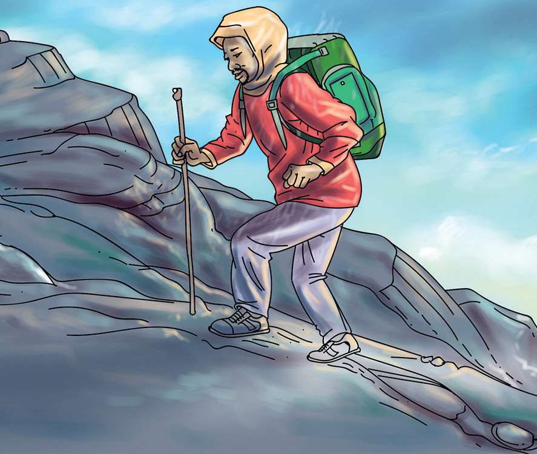

Exercise 1.3
Answer the following questions.
Hekima is a Form One student interested to be a pilot. His teacher encourages him to study hard and ensure he performs well in Geography, Physics, Mathematics and language subjects. Hekima’s friends also advise him that, besides being a pilot, he can also become a cartographer, surveyor, environmental expert, geologist, astronaut, astronomer, or meteorologist. Write an essay to explain Hekima’s interest in becoming a pilot in relation to the Geography subject.
Give reasons why the following career paths require specific geographical knowledge?
(a) Weather forecasting
(b) Map making and interpretation
(c) Planning and organisation of cities
(d) Aviation
(e) Photographer
Revision exercise 1
Study the pictures (a) to (f) and explain how they relate to the use of geographical knowledge.
